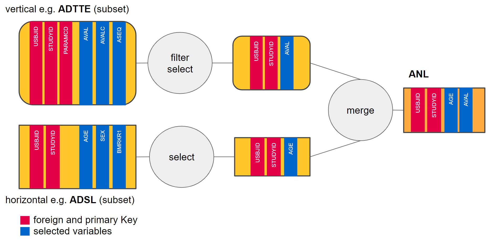

transforming-teal-data.RmdThere are times when an app developer wants to showcase more than
just one fixed slice of their dataset in their custom module.
Relinquishing control of the application to a user demands the developer
gives their users a degree of freedom. In case of analyzing data,
teal allows app developers to open up their applications to
users, letting them decide exactly what app data to analyze in the
module.
A lot of teal modules use data_extract_spec
objects and modules to tackle user input. You can find many examples in
e.g. teal.modules.general and
teal.modules.clinical.
data_extract_spec’s task is two-fold: create a UI
component in a shiny application and pass the user input
from the UI to the module itself. Having that formulated, let’s have a
look at how it supports both its responsibilities.
In order to showcase different initialization options of
data_extract_spec, first we define a shiny
module which uses data_extract_ui and
data_extract_srv designed to handle
data_extract_spec objects. Module creates UI component for
single data_extract_spec and prints list of values returned
from data_extract_srv module. Please see package
documentation for more informations about data_extract_ui
and data_extract_srv.
library(teal.transform)
#> Loading required package: magrittr
library(shiny)
extract_ui <- function(id, data_extract) {
ns <- NS(id)
teal.widgets::standard_layout(
output = teal.widgets::white_small_well(verbatimTextOutput(ns("output"))),
encoding = data_extract_ui(ns("data_extract"), label = "variable", data_extract)
)
}
extract_srv <- function(id, datasets, data_extract) {
moduleServer(id, function(input, output, session) {
reactive_extract_input <- data_extract_srv("data_extract", datasets, data_extract)
output$output <- renderPrint(reactive_extract_input())
})
}teal.transform functions depends on a
FilteredData from teal.slice package.
Normally, FilteredData is created automatically by
teal::init, but for example purposes we define a wrapper
function to initialize necessary object.
sample_filtered_data <- function() {
# create TealData
adsl <- teal.data::cdisc_dataset("ADSL", scda::synthetic_cdisc_data("latest")$adsl)
adtte <- teal.data::cdisc_dataset("ADTTE", scda::synthetic_cdisc_data("latest")$adtte)
data <- teal.data::teal_data(adsl, adtte)
# covert TealData to FilteredData
datasets <- teal.slice:::filtered_data_new(data)
teal.slice:::filtered_data_set(data, datasets)
datasets
}
datasets <- sample_filtered_data()Consider following example, where we create two UI elements, one to
choose level from SEX variable, and second one to select
variable from a c("BMRKR1", "AGE").
data_extract_spec object is handed over to the shiny app
and gives instructions to generate UI components.
simple_des <- data_extract_spec(
dataname = "ADSL",
filter = filter_spec(vars = "SEX", choices = c("F", "M")),
select = select_spec(choices = c("BMRKR1", "AGE"))
)teal.transform also provides data_merge_srv
which converts data_extract_srv into R expression to
transform data for analytical purposes. For example we may wish to
select "AGE" from ADSL and select
"AVAL" from ADTTE filtered for rows where
"PARAMCD" is "OS" and merge the results (using
the primary keys) to create an analysis dataset "ANL" to be
used in the module, as this diagram shows:

In the following code block we create equivalent of illustrated above.
adsl_extract <- data_extract_spec(
dataname = "ADSL",
select = select_spec(
label = "Select variable:",
choices = c("AGE", "BMRKR1"),
selected = "AGE",
multiple = TRUE,
fixed = FALSE
)
)
adtte_extract <- data_extract_spec(
dataname = "ADTTE",
select = select_spec(
choices = c("AVAL", "ASEQ"),
selected = "AVAL",
multiple = TRUE,
fixed = FALSE
),
filter = filter_spec(
vars = "PARAMCD",
choices = c("CRSD", "EFS", "OS", "PFS"),
selected = "CRSD"
)
)
data_extracts <- list(adsl_extract = adsl_extract, data_extracts = adtte_extract)Output from data_extract_srv (reactive)
should be passed to data_merge_srv together with
datasets (FilteredData).
data_merge_srv returns reactive list containing merged data
and informations needed to perform transformation - see more in
data_merge_srv documentation.
merge_ui <- function(id, data_extracts) {
ns <- NS(id)
teal.widgets::standard_layout(
output = teal.widgets::white_small_well(
verbatimTextOutput(ns("expr")),
dataTableOutput(ns("data"))
),
encoding = div(
teal.transform::data_extract_ui(
ns("adsl_extract"), # must correspond with data_extracts list names
label = "ADSL extract",
data_extracts[[1]]
),
teal.transform::data_extract_ui(
ns("addte_extract"), # must correspond with data_extracts list names
label = "ADTTE extract",
data_extracts[[2]]
)
)
)
}
merge_srv <- function(id, datasets, data_extracts) {
moduleServer(id, function(input, output, session) {
selector_list <- teal.transform::data_extract_multiple_srv(data_extracts, datasets)
merged_data <- teal.transform::data_merge_srv(
selector_list = selector_list,
datasets = datasets,
merge_function = "dplyr::left_join"
)
output$expr <- renderText(merged_data()$expr)
output$data <- renderDataTable(merged_data()$data())
})
}
shinyApp(
ui = fluidPage(merge_ui("data_merge", data_extracts)),
server = function(input, output, session) {
merge_srv("data_merge", datasets, data_extracts)
}
)